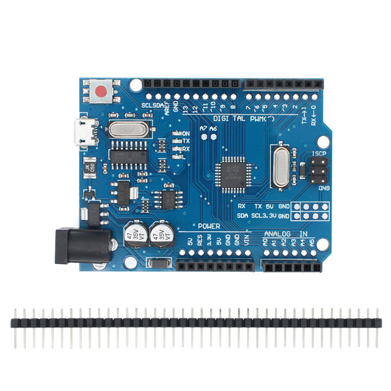
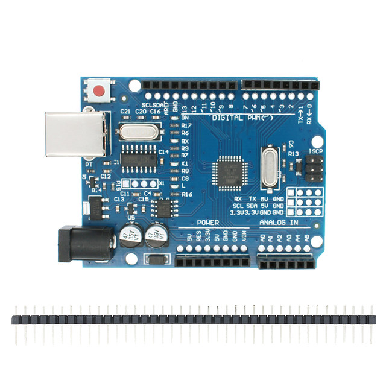
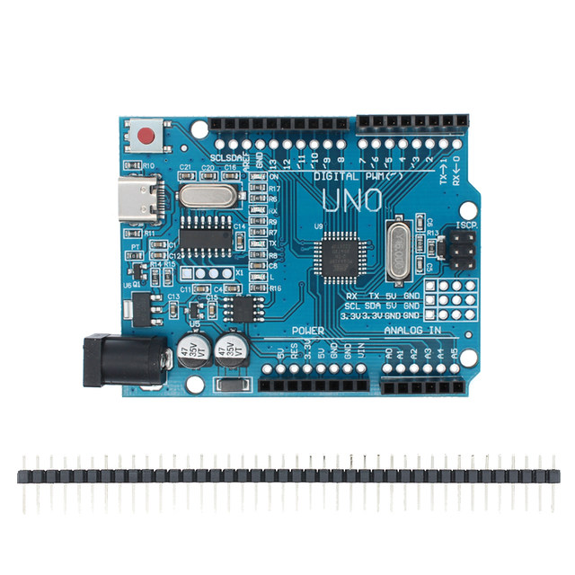

version of the optimization, mainly for foreign customers on product quality and
functional requirements of the case of high design, both to ensure that the
original and fully compatible with the same, but also easy to
use.Advantages:
1
completely solve the traditional UNO board win7 and win8 system is not
compatible with the above instability. Especially in the pirated 64-bit WIN7
system, the official board can not be installed driver, and this version is very
simple and easy to install.
2.
Increase the pin socket, easy to use DuPont line.
3.
Replace the 16u2, so that the cost reduced to half, consumers get the most
benefits
Download the program simple and
convenient. You can simply use the sensor, a variety of electronic components
connected (such as: LED lights, buzzers, buttons, photoresistors, etc.), to make
all kinds of interesting works.
The use of high-speed microprocessor controller (ATMEGA328), the development
of user interface and environment are very simple, easy to understand, very
suitable for beginners to learn.
Performance
description
I
/ O digital input / output terminals 0 ~ 13.
I
/ O analog input / output terminals 0 ~ 5.
Support ISP download
function.
Input voltage: connected to the
computer USB without external power supply, external power supply 5V ~ 9V DC
voltage input.
Output voltage: 5V DC voltage
output and 3.3V DC voltage output.
Using Atmel Atmega328
microprocessor controller